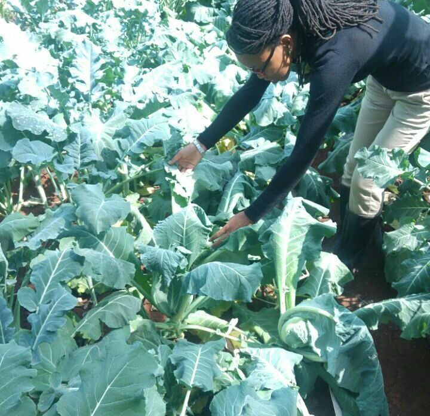

Reflections from my experiences in sustainable agriculture, environmental microbiology, research, innovation, resource management and stakeholder engagement.

22 August 2026
My understanding of climate-smart agriculture has been shaped not only by academic research but also by hands-on experience working within agricultural production systems.
This article reflects on lessons from farm management, efficient resource use, water conservation, disease management, post-harvest handling, market links and engagement with smallholder farmers.
Read Full Article →